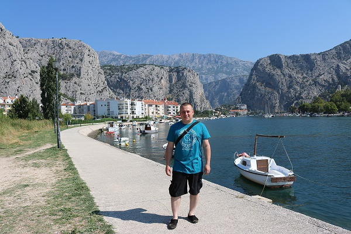
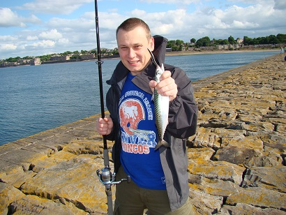

I like hot places.

I'm not afraid any job.

I caught only one fish in my life.
One day you will wake up and there won’t be any more time to do the things you’ve always wanted. Do it now.
My name is Slawomir. I was born 40 years ago in Poland. In June 1997, I passed a secondary school final exam (specialization: general electronic engineering). In June 2002, I was graduated from Agricultural University (University of Life Sciences) in Lublin (Poland), the degree of Master of Science, Engineer. In 2002 I started my first job in Poland as a computer service technician. Three years later, I decided to move to Scotland. I wanted to improve my English and travel around the world. I started my working career in Scotland with simple jobs as a waiter, commis chef, handyman. I have been employed by Zot Engineering since November 2007. I started to work as a pcb operator. Five years later, I was promoted to a process engineer position. My job was to solve all technical issues during pcb (printed circuit board) production in the surface finish department. Currently, I am employed as a quality technician and I work for the same company.
I've been employed by Zot Eng. since 2010.
Cycling can very easily become addictive.
Slawomir loves pentland.
I like hot places.
I'm not afraid any job.
I caught only one fish in my life.
I am married.
I love fire.
It isn't healfhy but it's my favorite food.